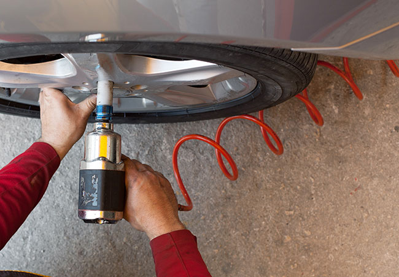

Přezouvání na letní pneumatiky

Přichází čas přezouvání na letní pneumatiky. Poradíme, jak neudělat chybu..
S jarem opět drtivá většina motoristů řeší přezouvání na letní pneumatiky. Výměna obutí vozu
je pro mnohé naprosto rutinní záležitostí, ale přesto existuje řada rad, kterými je dobré se
řídit. Díky jejich dodržení budete jezdit bezpečně a ekonomicky.
Přezouvání zimního a letního obutí je sice rutina, ale i přesto se na ní dá sem tam něco
zkazit. Otázek kolem přezouvání je ale více, mnoho řidičů například řeší, kdy je vhodná doba
pro přezutí, a zda si například pneumatiky zvládnou vyměnit sami, či nechat tento úkon na
odbornících.
Kdy přezout?
Povinnost mít na všech čtyřech kolech osobního vozu nazuté zimní pneumatiky platí v České
republice vždy od 1. listopadu do 31. března, tedy po pět měsíců v roce. Zákon nutně neříká,
že musí být zimní pneumatiky na voze vždy, ale vyžaduje je v případech, kdy je na vozovce
sníh, led, námraza, nebo v případě, že lze předpokládat, že tyto situace nastanou. Typicky
se mluví o případech, kdy teplota klesne pod 4 °C, sněží nebo prší při nízkých teplotách a
podobně.
Letošní mírná zima tedy možná dovolila provoz i bez přezouvání a to především v našem
hlavním městě, kde se sníh vyskytl jen po několik dní. I přesto však letos podle statistik
přezulo rekordní množství řidičů, asi 80 %. A ti všichni budou přezouvat zpět, protože jízda
na zimních pneumatikách v létě není o nic lepší nápad, než jízda s letními na sněhu.
Na otázku, kdy přezout, neexistuje jednoznačná odpověď, ale obecně se mluví o situaci, kdy
celodenní teploty stabilně překračují 7 °C. Řidiči, kteří jsou ochotni nechat vůz v garáži v
případě zhoršených podmínek, tak vlastně mohou přezouvat třeba již od půlky března, kdy
teploty pod tuto hranici v řadě míst klesají už jen v noci. V horských oblastech je
samozřejmě dobré s přezouváním ještě počkat.
Od konce března vám ovšem už zákon zimní pneu nenařizuje, budete se muset spolehnout na svůj
vlastní rozum. Ale částečně i na dopravní značení. Dopravní značka "Zimní výbava"
přikazující povinnost mít na autě zimní pneumatiky by totiž nově měla platit celoročně s
tím, že její platnost mohou upravovat třeba dodatkové tabulky. Takže pozor na to.
Proč vlastně přezouvat?
Zimní pneumatiky jsou vyráběné z měkčích směsí s lepší přilnavostí za nízkých teplot, mají
složitější vzorek pro lepší záběr na sněhu a řadu dalších konstrukčních úprav, které
zlepšují jejich výkony v zimě.
V létě ale tato konstrukční řešení naopak funkčnost pneumatik omezují. Při vyšších teplotách
směs a konstrukce zimní pneumatiky měkne, což může vést ke zhoršení přilnavosti a především
brzdných schopností pneumatiky.
V létě se zimní pneumatiky kvůli své měkčí směsi více opotřebovávají, což znamená, že je
vlastně využíváte neekonomicky. Navíc má zimní obutí větší jízdní odpory, které rostou právě
s teplotou pneumatiky - to zvyšuje spotřebu paliva a opět nutí řidiče sáhnout hlouběji do
kapsy. V neposlední řadě jsou také zimní pneumatiky kvůli své konstrukci hlučnější než obutí
letní. Přezutím na letní pneumatiky si tak zajistíte bezpečnější jízdní vlastnosti vozu,
větší komfort, ale především nižší provozní náklady.
Jaké pneumatiky vybrat?
Odborníci doporučují provoz jedné sady pneumatik zhruba po čtyři sezóny, nebo dokud má dezén
dostatečnou hloubku, která je v případě těch letních minimálně 1,6 mm. Pokud tedy již starší
letní sada dosloužila, je z důvodů bezpečnosti a ekonomiky provozu vhodné uvažovat o nové.
Pneumatiky vybírejte v rozměru, který předepisuje výrobce vozidla. Co se značky pneumatik
týče, řiďte se při výběru výsledky nezávislých testů, které každoročně zveřejňují všemožné
organizace v Evropě - třeba německý autoklub ADAC.
Organizace zveřejňují výsledky testů v nejpoužívanějších rozměrech a odborníci radí, že
podobné vlastnosti mohou mít pneumatiky o jeden až dva rozměry odlišné. Renomovaní výrobci
většinou s kvalitou problémy nemívají, na druhou stranu jejich pneumatiky nejsou
nejlevnější, takže je vhodné z testů vybrat ty, u kterých vyšší cena odpovídá nejlépe
požadovaným kvalitám (mezi nimi mohou být i životnost nebo spotřeba paliva).
Naopak šetřit na obutí za každou cenu také není dobrý nápad. Především neznámé čínské a
různé supermarketové značky nemusí poskytovat dostatečné bezpečnostní a kvalitativní
vlastnosti.
Mám přezouvat sám?
Mnoho řidičů se s přezouváním pneumatik lopotí samo. Za předpokladu, že letní a zimní sadu
mají každou na zvláštních discích, vlastně nejde o příliš složitou operaci. Jenže i ta
vyžaduje odpovídající nářadí. Zručnější zvládnou přezout svůj vůz do hodiny.
Ale i hodina investovaného času vlastně může být docela drahá, navíc jednu věc doma určitě
nezvládnete - vyvážení pneumatik. Ty se totiž neopotřebovávají rovnoměrně a v rámci
zachování jejich maximální životnosti a také dosažení co nejlepšího jízdního komfortu je
vhodné při každé výměně sadu pneumatik vyvážit.
Pak nehrozí, že začnou kola vozu zejména při vyšších rychlostech nepříjemně vibrovat.
Vyvážení je přitom v servisech zcela samozřejmou součástí výměny pneumatik. A vzhledem k
tomu, že jsou na k těmto úkonům pneuservisy vybaveny špičkovými nástroji, zvládnou vše za
zlomek času, co vy sami před domem nebo někde v garáži. Přitom přezutí u běžných vozů je
náklad v řádu vyšších stokorun.